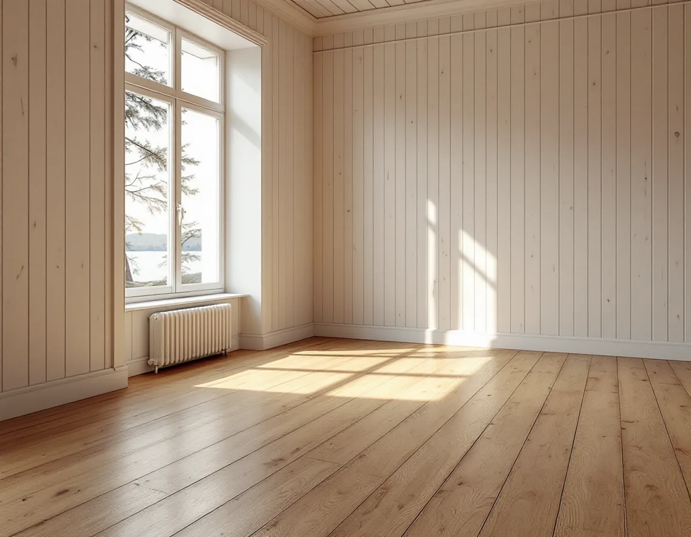
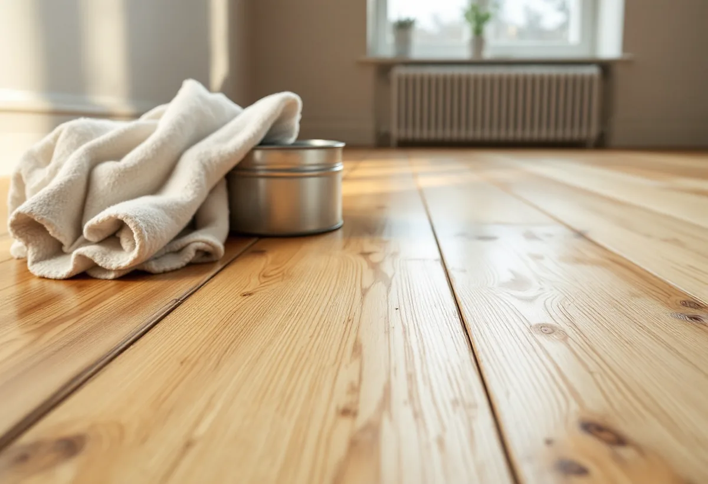

Platsbesök
Vi tittar på golvet och mäter fuktkvoten i träet.
Ett oljat trägolv går att bättra på där det slits, utan att hela rummet slipas om. I gengäld behöver det underhållas med jämna mellanrum. Geal Entreprenad AB slipar och oljar trägolv i villor och gamla sommarhus i Nacka, och vi går igenom underhållet med dig innan du väljer olja i stället för lack.

I Vikingshill och Sommarbo i Boo beskriver Nacka kommuns antikvariska utredning ett tidigare fritidshusområde som har fått en alltmer permanent befolkning. De första sommarvillorna på Rörsundaön byggdes på 1860-talet, och från 1930-talet blev tallskogen på höjderna söder om ön attraktiva fritidstomter, i många fall med ganska små och enkla fritidshus. En del av området ligger inom riksintresse för kulturmiljövården. Utredningen beskriver villorna med ljusmålad eller faluröd panel, rejäla stensocklar, höga fönster och utskjutande taksprång.
Ett hus som bara användes på sommaren och nu värms hela året får ett annat inomhusklimat, och det märks i trägolvet. Massiva trägolv krymper och sväller med luftens fuktighet, och Golvbranschen skriver att de mår bäst vid 30–60 procents relativ fuktighet.

Golvbranschens riktlinjer för oljebehandling, OLJA 22, ställer krav på golvet innan oljan läggs på. Det ska vara torrt, rent och nyslipat och fritt från fett, såpa, vax och lackrester. Fuktkvoten får inte överstiga 12 procent för barrträ och 8 procent för lövträ, och slipningen avslutas med korn 100 för barrträ och 120 för lövträ.
Rummet bör ha normal rumstemperatur och 30–60 procents luftfuktighet. Riktlinjerna manar till försiktighet under 15 och över 25 grader och vid starkt solljus, eftersom det påverkar torktiderna. I ett hus med stora fönster mot vattnet kan solen alltså avgöra vilken tid på dagen ett rum oljas.
Oljan stryks till full mättnad och bearbetas med maskin. Poleringen görs med 150–300 varv per minut, bäst vid 300, för att värma och stänga ytan, och den avslutas med en trasa som tar bort olja som blöder ut. Golvspringor och kvisthål kräver uppmärksamhet, eftersom oljan enligt riktlinjerna kan flyta ner i bjälklagsfyllningen.
Alla oljor kan självantända tillsammans med organiska material. OLJA 22 påpekar att det är oljan som oxiderar, inte lösningsmedlet, och att risken inte påverkas av temperaturen. Trasor och annat som varit i kontakt med oljan ska ligga i vatten i minst 24 timmar eller brännas omedelbart.
Behandlingen får inte göras nära öppen eld eller heta föremål, och rökning får inte förekomma under arbetet. Har huset en kamin eller öppen spis i rummet som ska oljas står den kall under de dagarna.
Skyddstäck helst inte ett nyoljat golv. Tidigast 48 timmar efter slutpoleringen, när golvet är helt torrt, kan det täckas med en papp som inte är diffusionstät, och pappen ska lyftas regelbundet så att skräp och uppumpad olja kan tas bort.
Ett oljat golv ska underhållas med jämna mellanrum. Enligt UNDERHÅLL 22 görs ett första underhåll i en bostad 4–6 månader efter grundbehandlingen och därefter vid behov, och de första underhållen beskrivs som mycket viktiga för att golvet snabbt ska få ett fullgott skydd. Gångstråk som slits mer oljas oftare än resten, och golvet går att punktbättra.
Mellan underhållen dammsugs eller torrmoppas golvet. Fukttorkning görs med hårt urvriden trasa eller mopp så att ytan är torr inom en till två minuter, och i vattnet blandas en återfettande golvsåpa. Den har en fetthalt på 20–30 procent och ska inte jämföras med vanlig gul- eller grönsåpa.
Ska golvet bytas eller bjälklaget förstärkas finns mer om det under golvläggare i Nacka. Jämförelsen mellan lack, olja och såpa finns på sidan om golvläggning.
Vi tittar på golvet och mäter fuktkvoten i träet.
Slipning, oljning och antal behandlingar redovisas var för sig.
Golvet slipas i alla steg och avslutas med finpapper efter träslaget.
Olja till full mättnad, maskinbearbetning och polering, med koll på springorna.
Trasor och rondeller läggs i vatten, och ingen öppen eld får finnas i rummet.
Du får råd om det första underhållet och om rätt golvsåpa.
Skatteverket räknar slipning av golv som rotarbete i ett småhus. Byggstädning efter arbetet ingår, men att forsla bort material och skräp gör det inte.
Avdraget är 30 procent av arbetskostnaden, högst 50 000 kr per person och år och högst 75 000 kr tillsammans med rutavdrag. Oljan och annat material ger inget avdrag. Avdraget dras direkt på fakturan.
Golvytan, golvets skick, träslaget och hur många omgångar olja som behövs för full mättnad styr mest. Efter ett gratis platsbesök får du ett skriftligt kostnadsförslag.
Parkett, trägolv, klinker och slipning.
Golvläggning i Stockholm →Takbyte, takbesiktning och plåtarbeten.
Takläggare i Nacka →Saltsjöbaden, Boo och Älta.
Takrenovering i Nacka →Saltsjöbanan, kommunens mark och kulturkartan.
Attefallshus i Nacka →VA, LTA och dagvatten på tomten.
Byggföretag i Nacka →Uthus, räcken och plåt kring villan.
Fasadmålning i Nacka →Villasamhällena vid Saltsjöbanan.
Fönsterbyte i Nacka →Linoljefärg, väder och verkstad för villafönster.
Fönsterrenovering i Nacka →Villastäder, sommarhus och radhus.
Badrumsrenovering i Nacka →Sommarvillor, stugor och villor i Nacka.
Fasadrenovering i Nacka →Sommarvillor, stugor och hus med källarplan.
Golvläggare i Nacka →Radhuskök, sekelskiftesvillor och vedspis.
Köksrenovering i Nacka →Panelvillor och sommarnöjen i Nacka.
Målare i Nacka →Farledens plåttak och Saltsjöbadens villor.
Plåtslagare i Nacka →Verandor, panel och altaner.
Snickare i Nacka →Ny tapet och dold dekor i äldre villor.
Tapetsering i Nacka →Strandskydd och villasamhällen.
Tillbyggnad i Nacka →